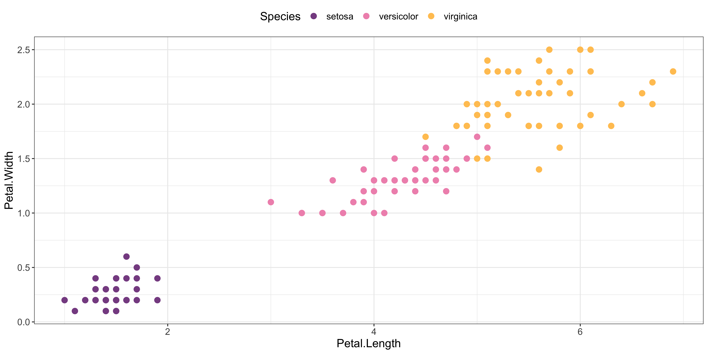

The technocolour package contains colour palettes based on the album artwork some of my favourite electronic music records. Enjoy!
You can install the package from Github:
devtools::install_github("sophiemeakin/technocolour")List the names of all available palettes with list_palettes(); you can specify the type of palette (qualitative, sequential, or diverging) with the argument type:
Use scale_color_techno() and scale_fill_techno() to use the palette in ggplot object:
ggplot(data = iris,
aes(x = Petal.Length, y = Petal.Width, col = Species)) +
geom_point(size = 3) +
scale_color_techno(palette = "rush") +
theme_bw() +
theme(legend.position = "top",
text = element_text(size = 14))
Print the track name, artist name and URL link for a named palette with info():
info("poodle")## Artist: Avalon Emerson
## Record: DJ-Kicks EP
## Track name: Poodle Power
## URL: https://avalonemerson.bandcamp.com/track/poodle-powerPlease read the package documentation for full details.
Please add new palettes based on your favourite records! Check out our contributing guide to find out how to get involved.